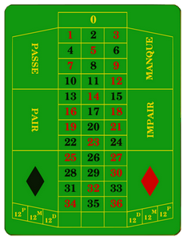

Projet : L'informatique pour les autres disciplines¶
L'informatique est aujourd'hui utilisée dans presque tous les domaines : la finance, la médecine, la politique, l'automobile, le design, le sport... C'est une science qui peut fournir des outils à toutes les autres disciplines. C'est le thème des projets qui vont être réalisés : développer un programme qui a un lien avec une autre matière que vous suivez.
Différents sujets sont proposés, proposant des programmes pour différentes matières. Pour chaque sujet, les fonctionnalités à programmer sont décrites et classées en différents niveaux. Pour tous les sujets, arriver au niveau 2 est impératif pour avoir la moyenne. Les niveaux supérieurs reprennent les fonctionnalités des niveaux inférieurs, et en ajoutent. Pour tous les sujets, les niveaux 1 et 5 sont les mêmes :
Niveau 1 (note inférieure à la moyenne)
- Programme comportant des bugs
- Programme n'ayant pas les fonctionnalités du niveau 2
Niveau 5
Rajouter des fonctionnalités à celles demandés jusqu'au niveau 4 peut vous permettre de compenser des points perdus ailleurs. Ce sera de toute façon valorisé.
Vous devez choisir un des sujets proposés, ou bien proposer un sujet de votre choix rentrant dans le thème : un programme informatique utile pour une autre discipline que l'informatique. Dans ce cas, soumettez-moi votre idée pour validation avant de commencer.
Sujet 1 : Probabilités et statistiques avec le jeu de la roulette (Maths)¶
Simulation du jeu de la roulette et visualisation des statistiques des lancers de la bille.
Niveau 2 (note maximale : 10/20 pour groupe de 3 ou 4, 15/20 pour groupe de 2)
- Programme interactif demandant au joueur son type de mise parmi celles à chances simples (Noir/Rouge, Pair/Impair, Manque/Passe - voir les règles ci-dessous),
- Lancer aléatoire de la bille avec une fonction de la bibliothèque
random, - Affichage dans la console des statistiques des numéros et des couleurs déjà sorties au cours de la partie,
- Actualisation de la mise du joueur après chaque lancer de la bille,
- Le jeu s'arrête lorsque la mise est à 0, ou que le joueur veut quitter.
Indications
On se base sur la roulette française dont les règles et types de mises possibles sont indiquées sur la page Wikipédia correspondante.

Niveau 3 (note maximale : 15/20 pour groupe de 3 ou 4, 20/20 pour groupe de 2)
(en plus du niveau 2) Affichage des statistiques des lancers précédents (couleurs et numéros tirés au sort) avec des graphes de la bibliothèque matplotlib, actualisé à chaque coup.
Indications
Utiliser la fonction subplot pour afficher plusieurs graphes en même temps.
Niveau 4 (note maximale : 20/20 pour tout groupe)
(en plus du niveau 3) Ajout d'au moins 4 types de mise à chances multiples, avec le calcul automatique de leur espérance mathématique.
Indications
L'espérance \(E\) est donnée par la formule \(E = \dfrac{N}{M}*100\), \(N\) étant le nombre de numéros sur lesquels se fait le pari, et \(M\) le nombre de numéros total.
Sujet 2 : Visualisation des images en optique (Physique)¶
Visualisation de l'image d'un objet à travers une lentille. L'objet est représenté par une matrice.
Niveau 2 (note maximale : 10/20 pour groupe de 3 ou 4, 15/20 pour groupe de 2)
- L'utilisateur donne la distance de l'objet à la lentille \(OA\) et la distance focale \(f'\) de la lentille.
- L'ordinateur calcule la position \(OA'\) de l'image par rapport à la lentille.
- L'ordinateur calcule l'image à travers la lentille en fonction de la valeur du grandissement : il l'agrandit si le grandissement est supérieur à 1 en valeur absolue, et la retourne s'il est négatif.
- L'objet est une matrice représentant une image en couleurs, qui doit être asymétrique - pas un carré simple - (voir le TP Dessin automatique d'image).
- Objet et image sont représentés sur un même graphe avec avec
matplotlib.
Indications
- Le grandissement vaut \(\dfrac{OA'}{OA}\).
- S'il est plus grand que 1, il est arrondi à l'entier le plus proche et l'image est agrandie.
Niveau 3 (note maximale : 15/20 pour groupe de 3 ou 4, 20/20 pour groupe de 2)
(en plus du niveau 2) L'image est rétrécie si le grandissement en valeur absolue vaut moins que 1. De la même façon que pour le grandissement, on divise la taille de l'image par un nombre entier.
Niveau 4 (note maximale : 20/20 pour tout groupe)
(en plus du niveau 3) La matrice représentant l'objet peut être donnée par l'utilisateur.
Sujet 3 : Représentation de données socio-économiques (SES)¶
Représentation graphique de données avec la bibliothèque matplotlib.
Par exemple, visualisation des performances d'une entreprise, comme ici : > Performances de Google <
Niveau 2 (note maximale : 10/20 pour groupe de 3 ou 4, 15/20 pour groupe de 2)
- L'utilisateur peut visualiser un jeu de données avec différents types de graphiques (histogramme, diagramme en barres,...).
- L'utilisateur peut choisir de visualiser un type de graphique, ou plusieurs en même temps.
- Les données sont cohérentes entre elles et les types de graphes choisis sont pertinents pour les interpréter.
- Les données sont entrées manuellement dans le code.
Indications
Des aides pour la bibliothèques matplotlib sur le site officiel https://matplotlib.org/
Niveau 3 (note maximale : 15/20 pour groupe de 3 ou 4, 20/20 pour groupe de 2)
(en plus du niveau 2) Les données sont stockées dans des fichiers et lues par le programme.
Niveau 4 (note maximale : 20/20 pour tout groupe)
(en plus du niveau 3) L'utilisateur peut visualiser plusieurs jeux de données stockés dans des fichiers.
Sujet 4 : Dictionnaire bilingue (Langue vivante - Anglais)¶
Traduction automatique entre le français et l'anglais à partir des données d'un dictionnaire bilingue sauvegardées dans des fichiers txt.
Niveau 2 (note maximale : 10/20 pour groupe de 3 ou 4, 15/20 pour groupe de 2)
- L'utilisateur entre un mot en français à traduire en anglais, l'ordinateur propose une traduction
- On utilise 2 fichiers
.txt, un avec les mots en français, un avec les mots en anglais - Les mots sont chargés depuis ces fichiers, et stockés dans des tableaux
Indications
Utiliser les fichiers suivant : français.txt et anglais.txt.
Niveau 3 (note maximale : 15/20 pour groupe de 3 ou 4, 20/20 pour groupe de 2)
(en plus du niveau 2) Si le mot n'est pas présent dans le dictionnaire, l'ordinateur le précise à l'utilisateur, et lui propose la traduction du mot le plus proche.
Indications
- Utiliser la distance de Hamming pour trouver les mots les plus proches.
- Si les mots ne sont pas de la même taille, rajouter des espaces
' 'au mot le plus court.
Niveau 4 (note maximale : 20/20 pour tout groupe)
- (en plus du niveau 3) L'utilisateur peut entrer un mot en anglais, traduit par l'ordinateur en français
Indications
Il faut modifier le fichier anglais.txt pour ne pas avoir plusieurs propositions pour 1 mot en français.
Sujet 5 : Correcteur orthographique (Français)¶
Détection des mot mal orthographiés (ne figurant pas dans le dictionnaire) et proposition de correction à partir d'un fichier comportant les mots d'un dictionnaire français.
Niveau 2 (note maximale : 10/20 pour groupe de 3 ou 4, 15/20 pour groupe de 2)
- L'utilisateur entre un nom de fichier qui stocke un texte (le fichier doit être accessible à l'ordinateur)
- L'ordinateur détecte les mots ne figurant pas dans le dictionnaire
- L'ordinateur indique le nombre d'erreurs dans ce texte et les mots mal orthographiés
Indications
- Il faut trouver un fichier
.txtayant l'ensemble des mots du dictionnaire en français. - Il faut stocker ces données dans une structure de tableau.
- Il faut faire de la lecture de fichier, voir pour le "TP Bibliothèque random et stockage dans des fichiers".
- Les algorithmes vus en cours sur les tableaux doivent être codés (pas d'utilisation de fonctions déjà écrites ou raccourcis Python).
Niveau 3 (note maximale : 15/20 pour groupe de 3 ou 4, 20/20 pour groupe de 2)
(en plus du niveau 2) Proposer une correction pour chacun des mots mal orthographiés : ce sera le mot du dictionnaire qui lui est le plus proche.
Indications
- Utiliser la distance de Hamming pour trouver les mots les plus proches.
- Si les mots ne sont pas de la même taille, rajouter des espaces
' 'au mot le plus court.
Niveau 4 (note maximale : 20/20 pour tout groupe)
(en plus du niveau 3) Stockage des corrections effectuées dans un fichier dont on demande le nom à l'utilisateur.